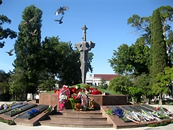

27 09 2011 (2055 дней 5 часов назад)
27 сентября
Праздник Воздвижения Животворящего Креста Господня установлен в память обретения и воздвижения Креста Христова. Это знаменательное событие произошло при императоре Константине Великом.
Равноапостольный император Константин, содействием Божиим одержавший в трех войнах победу над врагами, видел на небе Божие знамение — Крест с надписью «Сим победиши». Горячо желая отыскать Крест, на котором был распят Иисус Христос, Константин направил в Иерусалим свою мать, благочестивую царицу Елену. Хотя святая царица Елена к этому времени была уже в преклонных годах, она с воодушевлением взялась за исполнение поручения.
Pазыскивая Животворящий Крест, царица Елена расспрашивала христиан и иудеев, но долгое время ее поиски оставались безуспешными. Наконец, ей указали на одного старого еврея по имени Иуда, который сообщил, что Крест зарыт там, где стоит капище Венеры. Капище разрушили и, совершив молитву, начали копать землю. Вскоре были обнаружены Гроб Господень и неподалеку от него три креста, дощечка с надписью «Иисус Назорей, Царь Иудейский», сделанная по приказанию Пилата, и четыре гвоздя, пронзившие Тело Господа.
Чтобы узнать, на котором из трех крестов был распят Спаситель, Патриарх Макарий поочередно стал подносить кресты один за другим к тяжелобольной женщине. От двух крестов не произошло никакого чуда; когда же возложили третий крест, то она тот час исцелилась. Случилось, что в это время несли тело для погребения. Тогда стали возлагать кресты на умершего; и когда возложили третий крест, покойный ожил. Увидев воскресшего, все убедились, что найден Животворящий Крест.
В Константинополь святая Елена привезла с собой часть Животворящего Древа и гвозди. Равноапостольный император Константин повелел воздвигнуть в Иерусалиме величественный и обширный храм в честь Воскресения Христова, включавший в себя и Гроб Господень, и Голгофу. Храм строился около 10 лет. Святая Елена не дожила до освящения храма — она скончалась в 327 году. Храм был освящен 13 сентября 335 года
В Абхазии в день святого праздника отмечают 18-ю годовщину со дня освобождения столицы республики – Сухума от войск Госсовета Грузии.
По традиции с утра руководство страны, ветераны войны, представители общественности, школьники почтили память погибших в Отечественной войне народа Абхазии и возложили венки и цветы к Мемориалу Славы.
Праздник Воздвижения Животворящего Креста Господня установлен в память обретения и воздвижения Креста Христова. Это знаменательное событие произошло при императоре Константине Великом.
Равноапостольный император Константин, содействием Божиим одержавший в трех войнах победу над врагами, видел на небе Божие знамение — Крест с надписью «Сим победиши». Горячо желая отыскать Крест, на котором был распят Иисус Христос, Константин направил в Иерусалим свою мать, благочестивую царицу Елену. Хотя святая царица Елена к этому времени была уже в преклонных годах, она с воодушевлением взялась за исполнение поручения.
Pазыскивая Животворящий Крест, царица Елена расспрашивала христиан и иудеев, но долгое время ее поиски оставались безуспешными. Наконец, ей указали на одного старого еврея по имени Иуда, который сообщил, что Крест зарыт там, где стоит капище Венеры. Капище разрушили и, совершив молитву, начали копать землю. Вскоре были обнаружены Гроб Господень и неподалеку от него три креста, дощечка с надписью «Иисус Назорей, Царь Иудейский», сделанная по приказанию Пилата, и четыре гвоздя, пронзившие Тело Господа.
Чтобы узнать, на котором из трех крестов был распят Спаситель, Патриарх Макарий поочередно стал подносить кресты один за другим к тяжелобольной женщине. От двух крестов не произошло никакого чуда; когда же возложили третий крест, то она тот час исцелилась. Случилось, что в это время несли тело для погребения. Тогда стали возлагать кресты на умершего; и когда возложили третий крест, покойный ожил. Увидев воскресшего, все убедились, что найден Животворящий Крест.
В Константинополь святая Елена привезла с собой часть Животворящего Древа и гвозди. Равноапостольный император Константин повелел воздвигнуть в Иерусалиме величественный и обширный храм в честь Воскресения Христова, включавший в себя и Гроб Господень, и Голгофу. Храм строился около 10 лет. Святая Елена не дожила до освящения храма — она скончалась в 327 году. Храм был освящен 13 сентября 335 года
Спаси, Господи, люди Твоя и благослови достояние Твое, победы на сопротивныя даруя и Твое сохраняя Крестом Твоим жительство.

В Абхазии в день святого праздника отмечают 18-ю годовщину со дня освобождения столицы республики – Сухума от войск Госсовета Грузии.
По традиции с утра руководство страны, ветераны войны, представители общественности, школьники почтили память погибших в Отечественной войне народа Абхазии и возложили венки и цветы к Мемориалу Славы.